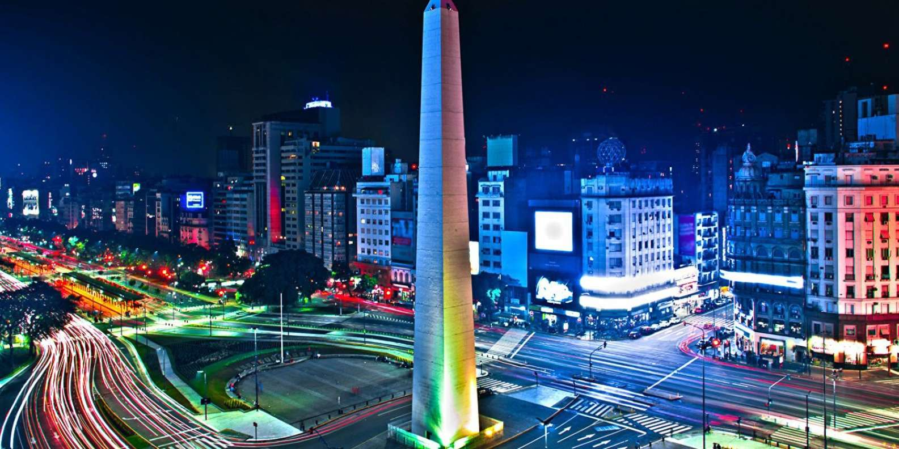
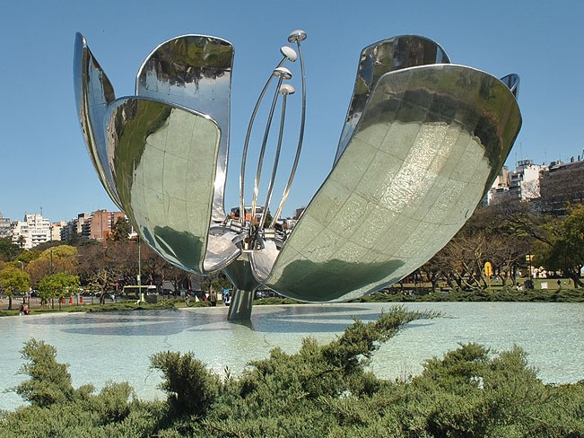
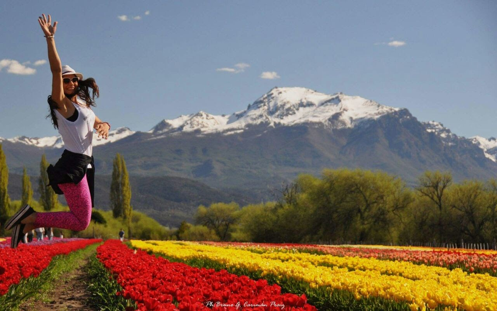
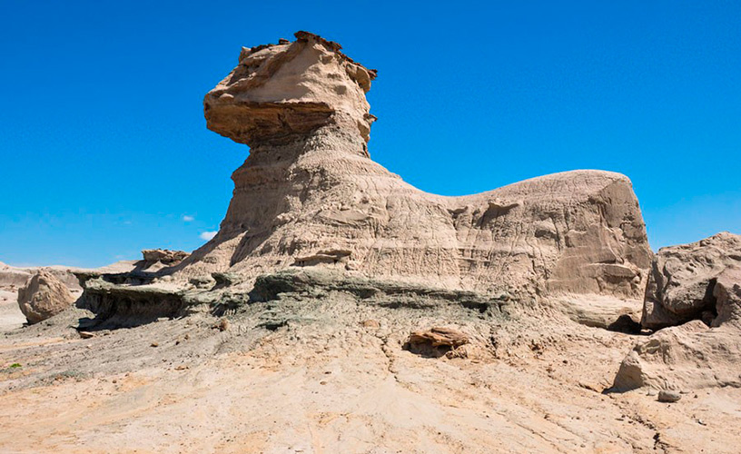
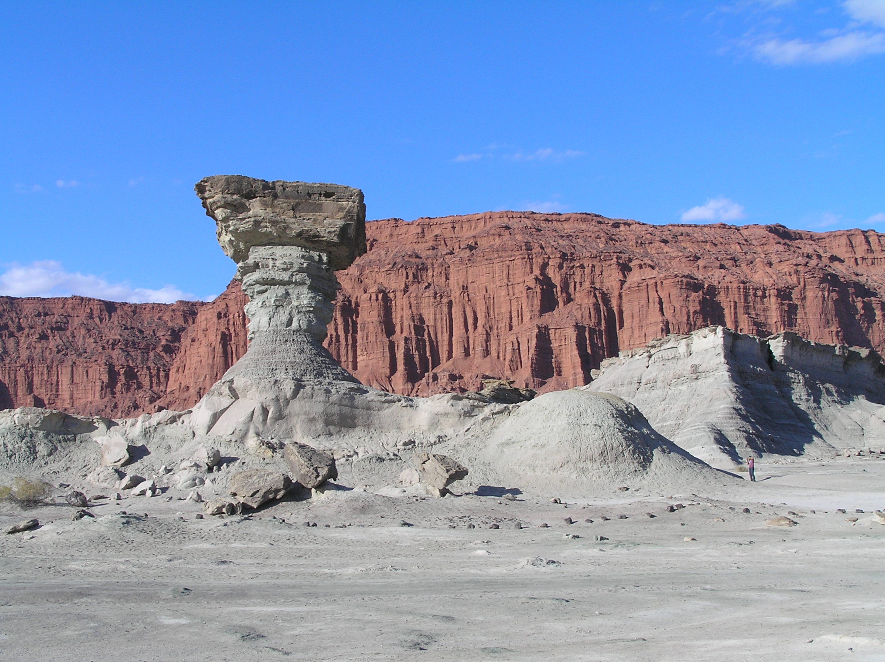

El Obelisco
Caminito

Teatro El Ateneo

Los Bosques de Palermo

Caballito
El Planetario

Buenos Aires
Es el destino más visitado de la Argentina por ser su capital y es el puente a otros destinos de este hermoso país. “Descubriendo Argentina” te invita a conocer su cultura, sus barrios, sus monumentos, su arquitectura y su adrenalina típica de una gran ciudad te invita a recorrerla en cualquier época del año
Patagonia
Sus paisajes majestuosos, sus montañas, sus mares sus glaciares y sus bosques. Toda la aventura de conocer estos magníficos paisajes la podes encontrar con “Descubriendo Argentina”.
Campo de Tulipanes en Chubut
Glaciar Perito Moreno
El Chalten
Ushuaia
Puerto Madryn
Bariloche
La ruta del vino
Cerro Aconcagua
El cañón del Atuel
Astroturismo en el Valle de Uco
Valle de la Luna
Rafting en Mendoza
Region de Cuyo
Los grandes viñedos y montañas de Mendoza, el Valle de la Luna en San Juan, los paisajes increíbles del cañón de Atuel y mucho, mucho más con “Descubriendo Argentina”.
Centro
“Descubriendo Argentina” te invita a uno de nuestros destinos preferidos por los Argentinos: Las sierras de Córdoba y de San Luis. Carlos Paz, Merlo, La Cumbrecita, La Falda, son solo algunos de los muchos destinos que te invitamos a descubrir.
La Falda

La Falda
Senderismo
Cabalgatas
Oktober Fest en Villa General Belgrano
Carlos Paz
El Cerro de los 7 colores

Salinas Grandes
Tren de las nubes
Villa Termal de Reyes
Valles Calchaquies
La ruta 40
Noroeste
Uno de los destinos mas alucinantes de la Argentina te brinda “Descubriendo Argentina”. Si te gusta la aventura, conocer costumbres de los pueblos nativos y tener experiencias inolvidables ten invitamos a conocer El Tren de las Nubes, el Cerro de los Siete Colores y el Carnaval de Jujuy, entre otros destinos.
Región Mesopotámica
Si buscas lindas temperaturas todo el año, todos los verdes y un intimo contacto con la naturaleza, “Descubriendo Argentina” posee las excursiones a los destinos mas exóticos del país. Las Cataratas del Iguazú (una de las Siete Maravillas del Mundo Natural), los salvajes Esteros del Iberá, las Termas Villa Elisa, o si querés subir aún más la temperatura… Los carnavales de Gualeguaychú.
Las Cataratas del Iguazu
Corrientes
Las Termas de Villa Elisa
Los Esteros del Ibera
Ruinas de San Ignacio
Gualeguaychú
Consulta el clima de alguna ciudad: